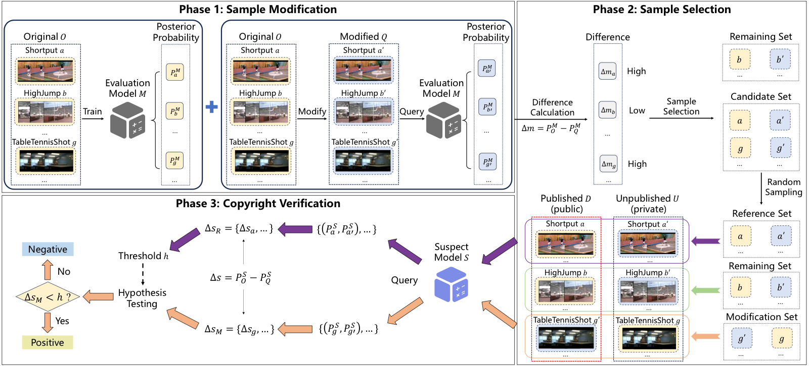

Abstract
Video recognition models are now widely used in content recommendation, monitoring, and other real-world applications, while the public video datasets that support these systems remain vulnerable to unauthorized reuse. VICTOR addresses this gap by providing a dataset copyright auditing method designed specifically for video recognition systems. It modifies a small portion of released samples in a stealthy way, amplifies the behavioral gap between modified and original videos, and then verifies potential dataset misuse by comparing the suspect model's predictions on carefully selected sample groups. The method preserves label semantics, requires only limited modification cost, and remains effective across multiple video models, datasets, preprocessing operations, and perturbation settings.
Resources
Citation
@inproceedings{YZDCSGHC26,
author = {Quan Yuan and Zhikun Zhang and Linkang Du and Min Chen and Mingyang Sun and Yunjun Gao and Shibo He and Jiming Chen},
title = {{VICTOR: Dataset Copyright Auditing in Video Recognition Systems}},
booktitle = {{NDSS}},
publisher = {Internet Society},
year = {2026},
}